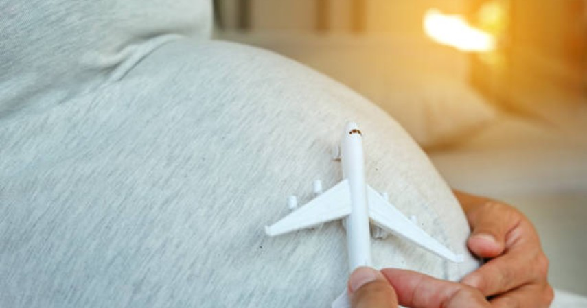

Sebelum Mama merencanakan kepergian, pastikan dengan dokter apakah kondisi kehamilan Mama aman untuk perjalanan dengan pesawat. Secara garis besar, usia kehamilan yang paling aman untuk bepergian adalah di trimester kedua, selama Mama tidak mengalami adanya komplikasi maupun resiko terjadinya komplikasi.
Tips Sebelum Penerbangan :
- Diskusikan segala potensi risiko yang bisa terjadi dengan dokter Mama . Sebagai contoh, Mama hamil yang memiliki kehamilan ganda (kembar) umumnya tidak disarankan untuk bepergian.
- Perhatikan bahwa menaiki pesawat di 6 minggu terakhir kehamilan dapat memicu terjadinya kelahiran prematur
- Perhatikan layanan penerbangan yang Mama gunakan, karena beberapa layanan penerbangan tidak mengizinkan wanita dengan usia kehamilan di atas 35 minggu untuk terbang sama sekali, atau membutuhkan surat dokter
- Aturlah dengan layanan penerbangan agar Mama mendapatkan kursi di dekat pintu keluar untuk ruang gerak lebih besar
- Pertimbangkan untuk memilih bangku di bagian dekat jalur berjalan sehingga lebih mudah untuk Mama pergi ke toilet
- Mintalah surat dokter untuk perijinan ibu hamil naik pesawat dan tandatangani bersama dengan layanan penerbangan yang Mama gunakan
Tips Saat Penerbangan :
- Gunakan kaus kaki untuk mengurangi Deep Venous Thrombosis (DVI), atau suatu kondisi medis umum di mana pembekuan darah terbentuk di salah satu pembuluh darah besar. Kondisi ini biasanya terjadi di tungkai bawah dan mengarah ke pemblokiran sirkulasi baik sebagian atau seluruhnya.
- Minum air lebih banyak, dan kurangi kopi dan teh
- Berjalanlah sesekali agar peredaran darah Mama lebih lancar
- Gerakkan kaki Ibu sesering mungkin saat Mama sedang duduk di kursi pesawat.
- Mintalah bantuan dari pramugari untuk membantu membawa barang-barang bawaan Mama